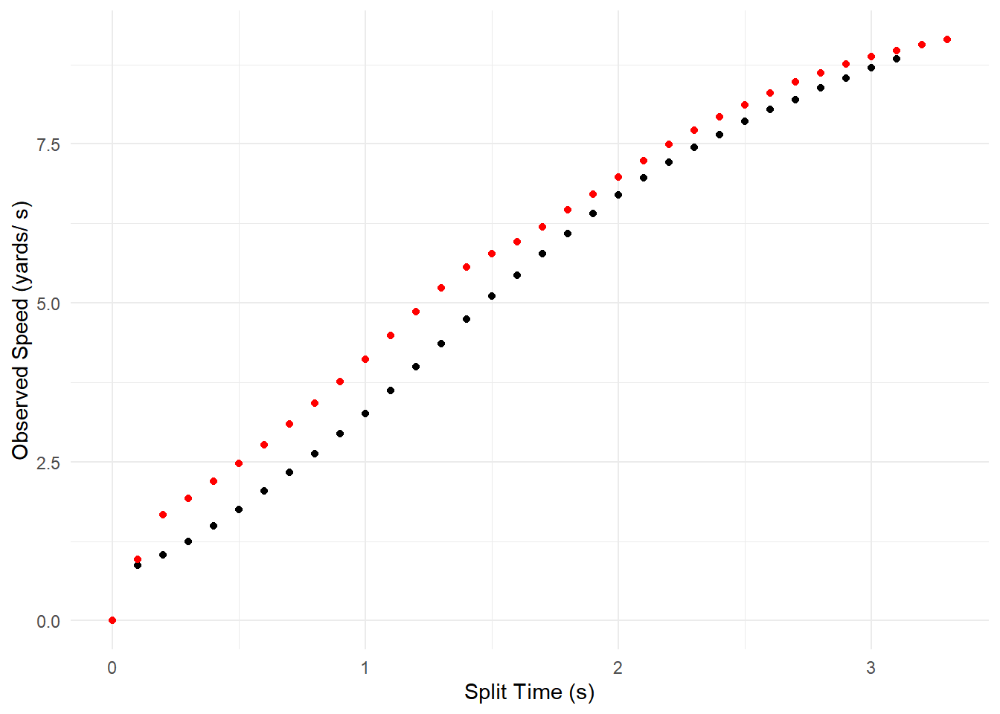

devtools::install_github("aaronzpearson/fvp")Profiling Multiple Athletes with fvp
A while ago, I was asked how to use fvp to profile multiple athletes at once.
At the time, I had trouble working it out. Luckily, a current project required a similar task and I figured that I would try my hand at profiling multiple athletes using the fvp package again.
An oversight of mine is that the fvp package isn’t setup to work well with the tidyverse (this might change with future updates). Therefore, we can’t rely on the group_by(), nest() and map() combination to apply functions to multiple players at once. Instead, we can rely on base R’s equivalent of split-apply-combine which, in this case, will rely on the split(), lapply(), and rbind() functions.
For this blog post, we’ll look at two scenarios: 1. creating a data.frame per athlete that can then be called upon for further analyses, and 2. reporting summarized data as a single data.frame.
Install and Load Packages
Install the fvp package if needed:
Load the packages
library(fvp) # for player profiling
library(tidyverse) # for initial data cleaning
library(data.table) # for efficient lodaing of the dataLoad Data
We’ll use some of the NFL’s Big Data Bowl positional tracking data for the examples. We’ll import the data directly from GitHub by identifying the raw formatted data. Since I’ve worked with the data before, I know that there are only a handful of variables that we need or should have in the data set. The variables I selected are: x & y coordinates, speed (s), player IDs (nflId), and play IDs (playId.
Please note that this file is large and can take a minute or two to load.
url <- "https://github.com/nfl-football-ops/Big-Data-Bowl/blob/master/Data/tracking_gameId_2017090700.csv?raw=true"
nfl <- data.table::fread(url) %>%
select(x, y, s, nflId, playId)
head(nfl) x y s nflId playId
1: 41.56 16.54 3.91 2495340 44
2: 41.95 16.62 4.28 2495340 44
3: 42.40 16.73 4.66 2495340 44
4: 42.85 16.82 5.04 2495340 44
5: 43.36 16.92 5.39 2495340 44
6: 43.87 17.02 5.60 2495340 44Since this data set doesn’t contain an acceleration (a) variable, we’ll need to add it in using mutate(). The data is at 10Hz, so we’ll take the difference of the players’ speed between time points and divide by 1/10. Also, I set it up so that acceleration is calculated per player, per play. This way, acceleration is not calculated as a continuous vector, rolling from player to player and play to play.
nfl.clean = nfl %>%
group_by(nflId, playId) %>%
mutate(a = c(0, diff(s))/.1)
head(nfl.clean)# A tibble: 6 × 6
# Groups: nflId, playId [1]
x y s nflId playId a
<dbl> <dbl> <dbl> <int> <int> <dbl>
1 41.6 16.5 3.91 2495340 44 0
2 42.0 16.6 4.28 2495340 44 3.7
3 42.4 16.7 4.66 2495340 44 3.8
4 42.8 16.8 5.04 2495340 44 3.8
5 43.4 16.9 5.39 2495340 44 3.50
6 43.9 17.0 5.6 2495340 44 2.1 Select Player
For our examples, we’ll select the two players with the most playing time.
players <- nfl.clean %>%
group_by(nflId) %>%
count(sort = TRUE)
top.players <- players$nflId[2:3] # players$nflId[1] is NA; represents the football
top.nfl <- nfl.clean %>%
filter(nflId %in% top.players)
head(top.nfl)# A tibble: 6 × 6
# Groups: nflId, playId [1]
x y s nflId playId a
<dbl> <dbl> <dbl> <int> <int> <dbl>
1 42.2 32.2 4.83 2550257 44 0
2 42.6 31.9 5.05 2550257 44 2.20
3 43.1 31.7 5.29 2550257 44 2.40
4 43.7 31.6 5.55 2550257 44 2.60
5 44.3 31.4 5.84 2550257 44 2.9
6 44.9 31.2 6.14 2550257 44 3 Split the Data Set per Player
The first step is to split() the data per player by their nflId. This is iterated over all players automatically. We’ll be left with a list of data.frames, so calling head() won’t work. Instead, we need to use the apply() family of functions to iterate a function over each element of the list.
player.df <- split(top.nfl, top.nfl$nflId)
lapply(player.df, head)$`2543699`
# A tibble: 6 × 6
# Groups: nflId, playId [1]
x y s nflId playId a
<dbl> <dbl> <dbl> <int> <int> <dbl>
1 38.0 28.6 0.31 2543699 395 0
2 38.0 28.6 0.29 2543699 395 -0.200
3 37.9 28.6 0.27 2543699 395 -0.200
4 37.9 28.5 0.26 2543699 395 -0.100
5 37.9 28.5 0.24 2543699 395 -0.200
6 37.8 28.5 0.23 2543699 395 -0.100
$`2550257`
# A tibble: 6 × 6
# Groups: nflId, playId [1]
x y s nflId playId a
<dbl> <dbl> <dbl> <int> <int> <dbl>
1 42.2 32.2 4.83 2550257 44 0
2 42.6 31.9 5.05 2550257 44 2.20
3 43.1 31.7 5.29 2550257 44 2.40
4 43.7 31.6 5.55 2550257 44 2.60
5 44.3 31.4 5.84 2550257 44 2.9
6 44.9 31.2 6.14 2550257 44 3 Best Sprints Data Sets
For this example, we’ll build a data set per player that returns their best on-field sprint. To do so, we’ll need the gps family of functions from fvp. Specifically, we’ll call the gps.best.sprint() function to return the player’s best observed, or actual, on-field sprint.
The gps.best.sprint() function takes on a few arguments: the game’s speed vector, the minimum starting speed for the sprint, and the percent of the player’s max speed that they must attain for us to consider the max effort sprint be achieved. Since player’s are often bumped at the beginning of each play, I set the minimum speed to 1 yd/s. I also set the percent of max speed to 95%. From experience, setting the percentage greater than 95% returns odd results because players don’t often reach their top speed more than 1-2 times per game.
One of the toughest parts of using lapply() is understanding the syntax. The first argument is the list onto which we want to apply a function. They second argument is the function we want to aply. That said, the function can either be pre-existing like in the example above. Otherwise, we can build a new function to incorporate different arguments.
Below, we must set the gps.best.sprint() function within another function. This way, we can consider x as the element of the list we want to apply the function. For this example, x represents the athletes’ data.frames.
sprints <- lapply(player.df,
function(x) gps.best.sprint(game.speed = x$s,
min.speed = 1,
max.speed.threshold = 95)
)
lapply(sprints, head)$`2543699`
split.time observed.speed
1 0.0 0.00
2 0.1 0.87
3 0.2 1.03
4 0.3 1.25
5 0.4 1.49
6 0.5 1.75
$`2550257`
split.time observed.speed
1 0.0 0.00
2 0.1 0.96
3 0.2 1.66
4 0.3 1.92
5 0.4 2.19
6 0.5 2.47We can then plot the sprints by either combining the data sets and adding-in the player’s names, or by calling upon their position in the list of data.frames. Here, I went with the latter.
theme_set(theme_minimal())
ggplot(sprints[[1]], aes(x = split.time, y = observed.speed)) +
geom_point() +
geom_point(data = sprints[[2]], colour = "red") +
ylab("Observed Speed (yards/ s)") +
xlab("Split Time (s)")
Player Profile Data Set
If we wanted to have a single data set that has all of the player’s summarized data, we can use a similar approach to the one above. The final step is to then re-combine the data so it is all in a single data frame using rbind().
We’ll use the same data split sets from above.
In this code chunk, we:
* apply the speed-accel player profiling function (sa.player.profile) to each element of the list
* use do.call() which also applies a function to each of the elements of the list
We need to use do.call() because it applies a function that isn’t typically allowed with lists. In this case, we built player profiles and used do.call() and rbind() to bind them back into a single data frame.
If we called rbind() directly, we’ll be returned an error.
speed.accel.profiles <- do.call(rbind,
lapply(player.df,
function(x) sa.player.profile(player.name = unique(x$nflId),
game.data = sa.data(x$s, x$a)))
)
speed.accel.profiles player.name max.speed max.accel player.tau r.square n.obervation
2543699 2543699 10.85789 6.833430 1.588937 0.9546985 47
2550257 2550257 11.39854 6.775927 1.682211 0.9519218 53Using the speed-accel function on the players’ data sets, we are returned their summarized data. The speed-accel profiles look similar with player 2550257 slightly faster and player 2543699 slightly more accerlation dominant.